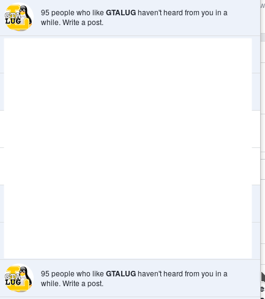
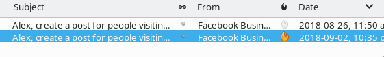
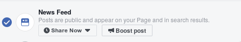
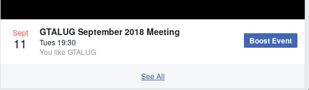
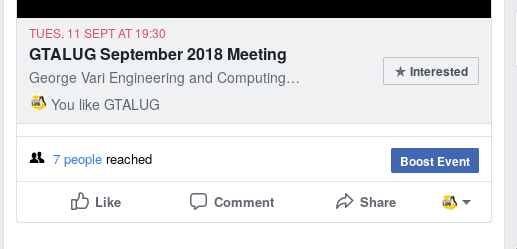
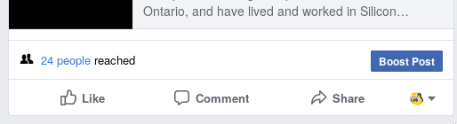
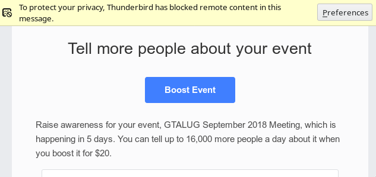
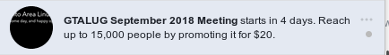
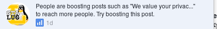
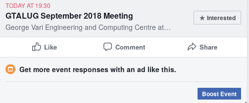

I have written this post back in September, but didn't get arount to posting it now.
I quit twitter back in September, when I finally I got convinced that twitter managed to find business model where they convert human misery into money.
I'm a member of the board of a Linux users group in Toronto and during the meeting in September I raised a question about having presence on such user-hostile social media platforms but I was given a good counter-argument that it is how people find out about our events and mailing list. So I decided to give it another changes and post a few things on often-neglected facebook page.
I'm an administrator of our brand account page and facebook has been nagging me about 'writing a post' every week or so.
When I don't click on those messages they send me emails.
I decided to try and put some effort in having presence. Instead of the usual posting links with minimal description, I started writing a post about our upcoming event. facebook suggested for the post to be turned into a calendar event and I followed the suggestion.
  My experience doing this wasn't all that stellar -- Facebook was very helpful with putting 'Boost' button next to 'Post'; if you really want anyone to see this even at all, you will need to boost your event.
When creating an event, it's plainly laid out that whatever you have to say will not show up in users timeline unless users are specifically looking for it.
facebook also likes to show me how many people were 'reached', which is a euphemism for the number of people who were actually 'shown' the event, and that number was less than 10% of the people who subscribed. Of course when I post links to our videos the number is around 30% -- so the policy there is to let the users see the content, but if a page promotes any kind of thing where some users might participate, the business has to pay for the people to show up.
After I created the event the marketing algorithm kicked in, and the person who wrote the algorithm did their best to sent another customer through a funnel, so I kept getting emails with a simple message -- "Let up to 15000 people see your event for only $20".
This was an excuse for it to send me email every day leading up to event, and this is how facebook feeds on your insecurity, every day it will email you saying -- "Are you sure people show up? Pay us $20 and reach up to 15000 people." The message crafted to be as inoffensive as it is persuasive.
Since facebook didn't get any satisfaction from me via email, they added the same notification with the same message whenever I logged in with my personal account.
Event notification haven't had any meaning for a very long time -- and if I wanted to keep them useful I would have to constantly update my privacy settings, or I would be notified about my friend's brother's father's uncle's dog's walkies. This was done to increase 'engagement' to make us feel like something important is happening and everyone would keep checking facebook, now the same technique is used to extract money from people.
As the event approached facebook kept hammering me with messages whenever I logged in.
 I understand what is going on behind these constant messaging and I would delete those messages, but this got me thinking about how this affects others, like a the person who doesn't know these details and when these messages are effective. The messages crafted to people feel inadequate, isolated and compel in strongest terms to give up the money to have that small bit of social connection and hope that everything is going to be fine and things are going to work out.
Based on these facts I've become convinced that by just doing nothing and staying on those platforms I collaborate with these awful enterprises, I know what is going on. If I do nothing, I will remain as the leverage, for the likes of facebook and twitter, to keep people on their services; where they would extract profits by tormenting the people who aren't aware of what is going on.
In the short term, changing brand account to a community would prevent me getting bombarded by constant facebook nagging, but in the long term, promoting alternative ways of interacting with people, like adding pinned pages with contact information when no corporation stands as a middleman is a way to go. This may not give immediate result but at least when someone is interested in what I have to say, they would be aware that one of the things I have to say -- don't use facebook.
Useful alternatives for me seems to be mastodon -- as an alternative to twitter; moderated mailing lists with Code of Conduct -- for general discussion.